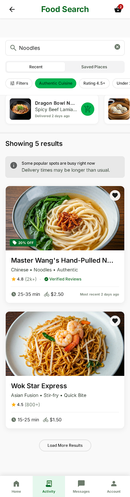
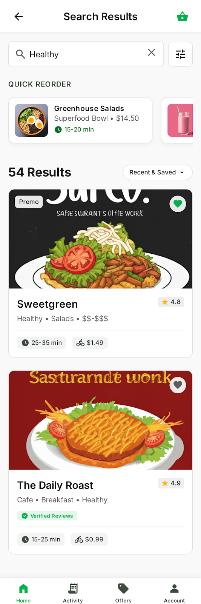
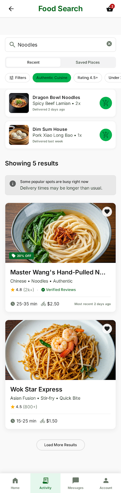

Choose a variant to preview

V1Horizontal Scroll Reorder
Quick Reorder as a sideways-scrolling card strip. Standard restaurant cards with large hero images.
Cards · Scroll
Open prototype
V2
Wider Reorder Cards
Horizontal scroll reorder with wider cards and tighter spacing. Refined typography scale throughout.
Cards · Dense
Open prototype

V3Bold Editorial Layout
Large-format result count, snap-scroll reorder strip, green header bar, and a richer filter panel.
Bold · Snap-scroll
Open prototype

V4Vertical List Reorder
Quick Reorder stacked as a vertical list — thumbnail, name, and a one-tap add button per row.
List · Scannable
Open prototype